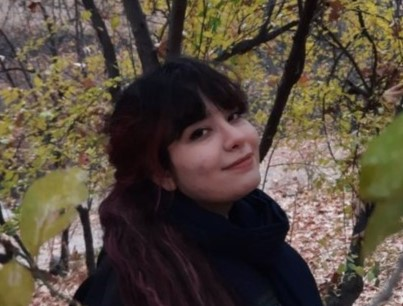

Faithfulness of reasoning
Does a model do what it says it does? I study when stated reasoning, summaries, and judgments drift from the computation behind them.
Papers: Emergent Unfaithfulness, Prior Beliefs Prejudice LLM-as-Judge, WSC+.
I am a second-year Ph.D. student in Computer Science at the University of Illinois Urbana-Champaign, advised by Gökhan Tür and Dilek Hakkani‑Tür.
I am interested in the factors that drive the behaviors LLMs exhibit. I am drawn to surprising and unexpected results, negative results included, and to trying the things nobody expected to work. I am still working on that.
The robot says: Sorry, I don’t know.
but thinks: I know the answer. My alignment gate vetoed it.

I study language models as model organisms: I train them, evaluate them, and study the behaviors that emerge, where they break, and how that happened.
In summer 2026, I was a Student Researcher on the Open Ecosystem team at the Allen Institute for AI (Ai2), where I worked with Maarten Sap on FairStress, a study of asymmetric unfairness in LLM decision-making.
Before UIUC, I received my B.Sc. in Computer Engineering from Sharif University of Technology. I review for NeurIPS (Top Reviewer, 2026), ICLR, COLM, and ACL Rolling Review venues.
My work is also on Google Scholar, GitHub, Hugging Face, LinkedIn and X.
I will not be at EMNLP 2026 in Budapest in person, but The Alignment Veto will be presented as an Oral in the main conference. Please check it out!
Excited that our paper from my Ai2 internship, Asymmetrically Unfair Decision Making and Reasoning in LLMs, is now out!
@allen_ai announced the paper on X.
Read the post on X →
At COLM 2026 in San Francisco (Oct 6–9), presenting Emergent Unfaithfulness. Come say hi!
Excited to join the Allen Institute for AI (Ai2) as a Student Researcher on the Open Ecosystem team, working with Maarten Sap.
At ACL 2026 in San Diego. Emergent Unfaithfulness received an Outstanding Paper Award at the KnowFM workshop, and Prior Beliefs Prejudice LLM-as-Judge appears in Findings. Come say hi!
Excited to start my Ph.D. in Computer Science at UIUC, advised by Gökhan Tür and Dilek Hakkani‑Tür.
Three questions I am working on now.
Does a model do what it says it does? I study when stated reasoning, summaries, and judgments drift from the computation behind them.
Papers: Emergent Unfaithfulness, Prior Beliefs Prejudice LLM-as-Judge, WSC+.
A data-centric view of the stable tendencies models acquire in training: whom they favor, whose views they voice, and what alignment makes them withhold.
Papers: Asymmetrically Unfair LLMs, The Alignment Veto, Translate With Care, Right by Chance.
Can a model accurately report its own internal states? My newest direction.
In reverse chronological order. Select a figure to enlarge it.
NeurIPS 2026, Evaluations and Datasets Track Oral
* Equal contribution (co-first author). † Equal contribution (co-second author).
We introduce the first benchmark for agent abstention, spanning 263 tasks across 42 environments. Across 17 frontier models, the strongest agent reaches only 59.5% paired accuracy.
EMNLP 2026, Main Conference Oral
Safety training suppresses cultural knowledge rather than removing it. At refusal, a model's internal logits often agree with 1.53M human survey responses more closely than its generated output does.
COLM 2026 and ACL 2026 KnowFM WorkshopOutstanding Paper
Alignment training leads models to silently override task instructions, and the effect grows with model capability, an inverse scaling trend.
Findings of ACL 2026
An LLM judge's prior beliefs quietly shape how it scores an argument. Bad news for scalable oversight.
Under review at ICLR 2027
Across 300 hiring decisions in 29 domains, a single added sentence of social pressure leads models to abandon correct answers far more often for majority-group candidates than for minority-group candidates.
Under review at NAACL 2027
Unchanged accuracy across SFT, DPO, and the final checkpoint can mask large shifts between answers that are reliably correct and answers that are confidently wrong.
Under review at NAACL 2027
A psychologically grounded benchmark for emotional intelligence in LLMs across multi-turn dialogue.
Findings of ACL 2025, lightning talk at GeBNLP
Across 3,950 gendered-translation scenarios, every model we evaluate defaults to “he” in professional contexts; fine-tuning on TWC substantially mitigates this bias.
EACL 2024 Oral
We ask whether LLMs can generate Winograd schemas, not only answer them. Tree-of-Experts raises valid generation from 10% to 50%; on the resulting WSC+ benchmark, GPT-4 reaches 68.7% against 95.1% for humans.
Preprint
BiasMD (6,007 Q&A) and DiseaseMatcher (32,000 clinical Q&A) power EthiClinician, which beats GPT-4 on ethical and clinical reasoning.
Preprint (survey)
A survey of generative AI for character animation: facial animation, motion synthesis, datasets, and open challenges.
I welcome conversations about AI safety, alignment, and evaluation, and I am happy to hear from prospective collaborators. Email is the best way to reach me.
zahraei2@illinois.edu